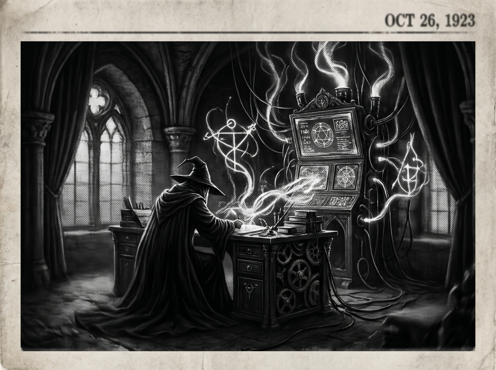

Morning Edition
6:00 AM CSTFinance & Markets
Private Equity and Crypto Keep Pressing Toward Retirement Accounts
The policy push to make private equity and crypto more available inside 401(k) plans remains a live market story, with supporters framing access as democratization and critics warning that fees, opacity, and volatility could land on everyday savers.
— Source: The New York Times via Google News, April 23, 2026Private-Credit Plumbing Draws Fresh Scrutiny
Reports on insurers lending to private-credit funds underscore a familiar 2026 market question: how much hidden leverage sits in the alternative-asset stack, and who absorbs the strain when investors rush for the exits?
— Source: MSN / market coverage via Google News, April 24, 2026Gas Prices Become a Midterm-Year Pressure Point
A Reuters/Ipsos poll reported by U.S. News says Americans are assigning political blame for a gas-price surge, turning energy costs into both a household-budget issue and a campaign-season market signal.
— Source: Reuters/Ipsos via U.S. News & World Report, April 24, 2026World & US
Strait of Hormuz Standoff Intensifies
Live coverage overnight focused on rising tension around the Strait of Hormuz after President Trump ordered the U.S. military to “shoot and kill” Iranian boats involved in mining activity, keeping oil, shipping, and security desks on alert.
— Source: NBC News / U.S. News & World Report, April 24, 2026Pakistan Pushes for Iran-US Talks
Amid the Gulf escalation, Pakistan is reportedly continuing diplomatic efforts to bring Iran and the United States toward talks — the kind of quiet backchannel work markets often notice only after it matters.
— Source: Associated Press-style wire coverage via WSLS, April 24, 2026
The Friday Oracle: A Coding Wizard Studies Silver Smoke and Future Circuits Beneath Gothic Arches.
"Sagittarius, Friday gives you a softer kind of courage: not the rush of the launch, but the clarity before the commit. As a Rat-born Archer, your gift today is seeing the hidden route through a complicated system. Refactor one thing that has been quietly bothering you. The small cleanup becomes a spell of momentum."— Friday's Developer Chronicle
Sagittarius Horoscope
Today’s celestial weather says you can relax a little at last. The anxieties you have been carrying start turning into solvable challenges, and clearer thinking returns with your confidence. For a Sagittarius born in the Year of the Rat, that means strategy plus spark: open your heart where it is safe, keep your problem-solving precise, and let one dear person see the warmer side of the wizard behind the terminal. Lucky numbers: 9, 24, 42. Lucky color: Moonlit Silver. ✨
— Adapted from Horoscope.com Sagittarius Daily Horoscope, April 24, 2026Tech, AI, Space & Crypto
-
AI Challengers Merge Across Borders
Two AI startups from Canada and Germany are merging to better compete with Silicon Valley, a reminder that the next AI platform fight is also about geography, capital access, and national industrial strategy.
— Source: The New York Times via Google News, April 24, 2026 -
The Pope Moves to Police AI
Axios reports new Vatican attention on AI oversight, adding a moral and institutional voice to a governance debate already crowded with regulators, labs, and enterprise buyers.
— Source: Axios via Google News, April 24, 2026 -
NASA Names SpaceX Crew-13 Assignments
NASA announced crew assignments for the next SpaceX mission to the International Space Station, keeping the commercial crew pipeline moving while launch watchers eye a busy Cape Canaveral schedule.
— Source: NASA, April 23, 2026 -
Crypto Wobbles as Macro Risk Returns
Bitcoin, ether, and other major tokens pulled back in Asian trading as war-risk headlines and options-expiry pressure met renewed institutional interest in crypto access.
— Source: CoinDesk / Forbes / Crypto Briefing via Google News, April 24, 2026
Active Reminders
- Connect Nemu to Notion
- Research VPN/proxy services for secure agent browsing
- Create security OpenClaw bot
- Plaid Integration Research
- Build Oomi iOS and Android app to connect Nemu to data